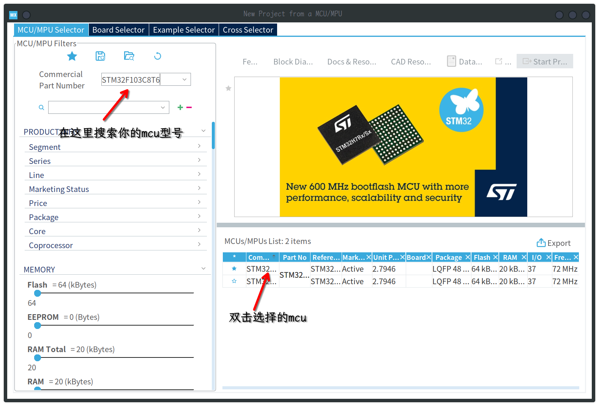
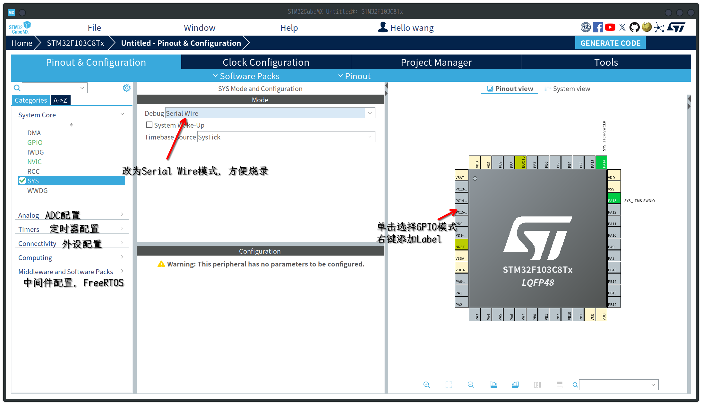
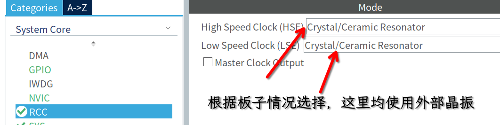
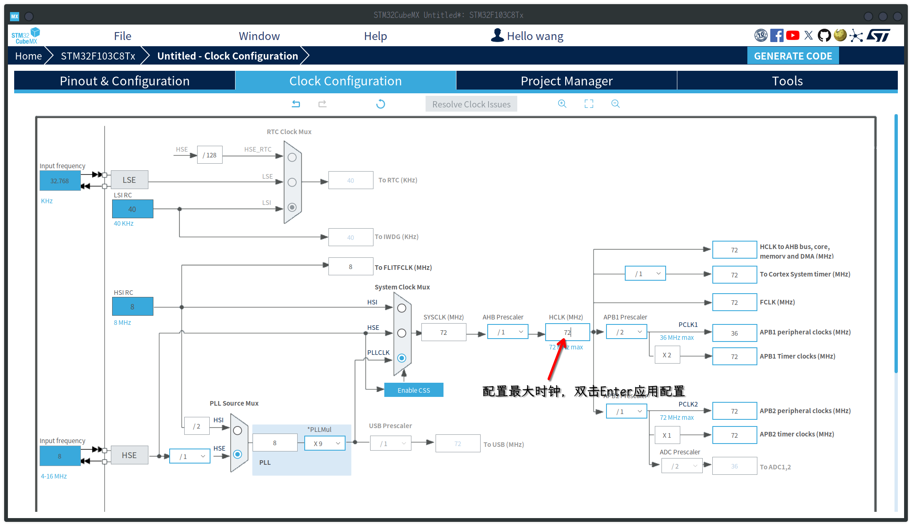
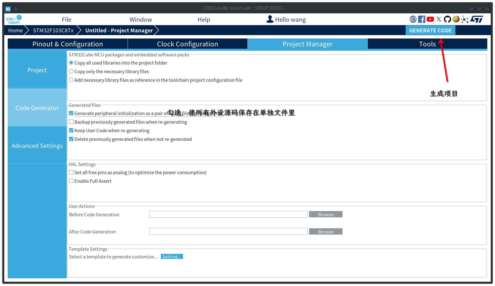

在Archlinux下配置stm32开发环境
安装软件
1 | yay -S stm32cubemx arm-none-eabi-gcc arm-none-eabi-newlib stlink |
- stm32cubemx : 用于配置外设，时钟并生成CMAKE项目，方便使用VScode开发。
- arm-none-eabi-gcc : arm编译工具链，用于编译stm32代码。
- arm-none-eabi-newlib : 解决一些库找不到的问题。
- stlink : 使用stlink烧录，调试。
使用Stm32cubeMX生成项目





编译和烧录程序
使用vscode打开生成的项目，打开终端，运行之后会生成elf固件，stlink需要我们将其转换成bin文件才能烧录。1
2
3
4mkdir build
cd build
cmake ..
make使用stlink将bin文件烧录至stm32开发板1
arm-none-eabi-objcopy -O binary test.elf test.bin
为简化构建烧录步骤，可编辑CMakeLists.txt文件，添加自定义命令和伪目标1
st-flash write test.bin 0x08000000
简化后的命令为：1
2
3
4
5
6
7
8
9
10
11
12
13
14
15
16
17
18# 生成hex文件
add_custom_command(
TARGET ${CMAKE_PROJECT_NAME}
POST_BUILD
COMMAND ${CMAKE_OBJCOPY} -O ihex $<TARGET_FILE:${CMAKE_PROJECT_NAME}> ${CMAKE_PROJECT_NAME}.hex
)
# 生成bin文件
add_custom_command(
TARGET ${CMAKE_PROJECT_NAME}
POST_BUILD
COMMAND ${CMAKE_OBJCOPY} -O binary $<TARGET_FILE:${CMAKE_PROJECT_NAME}> ${CMAKE_PROJECT_NAME}.bin
)
# 烧录伪目标
add_custom_target(flash)
add_custom_command(
TARGET flash POST_BUILD
COMMAND st-flash write ${CMAKE_PROJECT_NAME}.bin 0x08000000
)1
2
3cmake ..
make
make flash为何使用CMAKE？
首先，相比于gnu make，cmake是一个比较容易学习的c/c++构建工具，而且cmake可以帮助我们生成compile_command.json文件，方便编辑器的LSP识别代码源文件和头文件并提供代码提示的功能。另外，cmake适用多种编辑器或集成开发环境(VScode, visual studio, clion, neovim)，更适合多平台开发。
本博客所有文章除特别声明外，均采用 CC BY-NC-SA 4.0 许可协议。转载请注明来自 Pengunix！